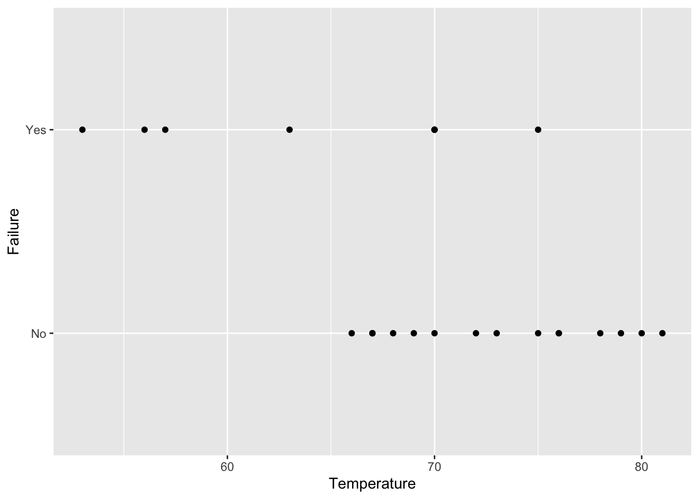
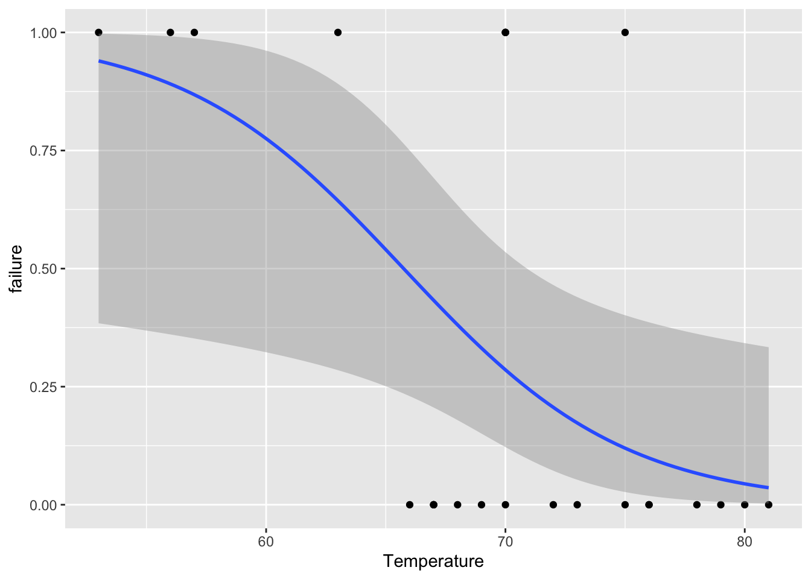
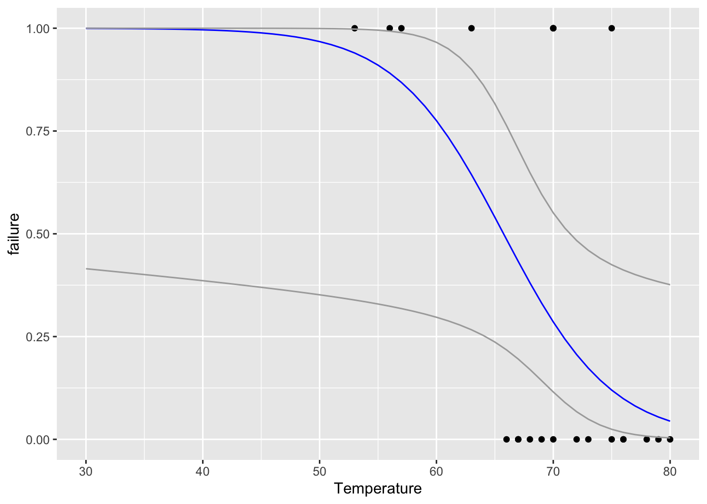
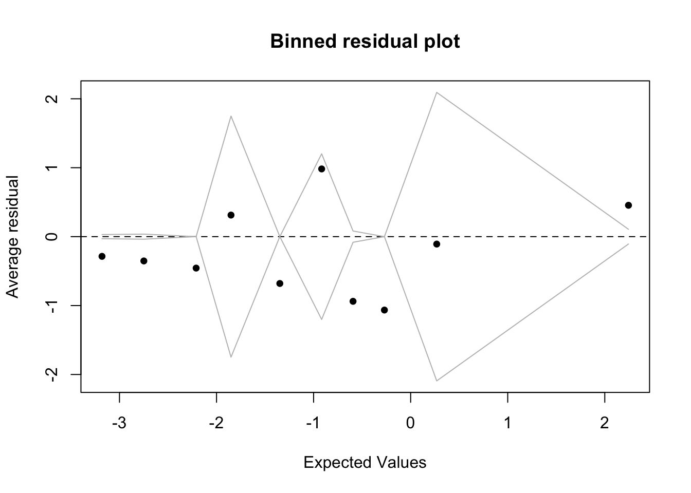

19 Conclusions
19.1 Introduction
- This text began with an analysis of the Space Shuttle Challenger distaster
- The author concludes the book by re-analyzing the data using keypoints covered in the past 17 chapters
install.packages("arm", repos = "https://cran.us.r-project.org")
install.packages("ggplot2", repos = "https://cran.us.r-project.org")
install.packages("faraway", repos = "https://cran.us.r-project.org")
install.packages("patchwork", repos = "https://cran.us.r-project.org")
install.packages("dplyr", repos = "https://cran.us.r-project.org")
install.packages("Sleuth3", repos = "https://cran.us.r-project.org")19.2 A binomial GLM analysis of the Challenger binary data
- The fuel leaks key to this dataset can be expressed in binary form
urlfile="https://raw.githubusercontent.com/apicellap/data/main/ex2011.csv"
ex2011x<-read.csv(url(urlfile))
str(ex2011x)
#> 'data.frame': 24 obs. of 2 variables:
#> $ Temperature: int 53 56 57 63 66 67 67 67 68 69 ...
#> $ Failure : chr "Yes" "Yes" "Yes" "No" ...
head(ex2011x)
#> Temperature Failure
#> 1 53 Yes
#> 2 56 Yes
#> 3 57 Yes
#> 4 63 No
#> 5 66 No
#> 6 67 NoThis dataset contains an error, rectify it:
ex2011x[4,2] <- "Yes" #It is always better document changes in a script and not alter the original dataframePlot Failure vs. launch temperature:
fig19_1 <- ggplot(ex2011x, aes(x = Temperature, y = Failure)) + geom_point()
fig19_1
Recharacterize binary form of data:
ex2011x <- ex2011x %>%
mutate(failure = if_else(ex2011x$Failure == "Yes",1 , 0)) #if this statement is true then in column entitled 'failure' put 1, else put 0
head(ex2011x)
#> Temperature Failure failure
#> 1 53 Yes 1
#> 2 56 Yes 1
#> 3 57 Yes 1
#> 4 63 Yes 1
#> 5 66 No 0
#> 6 67 No 0Create a binomial GLM:
Extract the model’s coefficients:
coef(m1)
#> (Intercept) Temperature
#> 14.1700665 -0.2155279Examine the 95% CI:
confint(m1)
#> Waiting for profiling to be done...
#> 2.5 % 97.5 %
#> (Intercept) 3.3162485 31.83327461
#> Temperature -0.4724172 -0.05831438- Based on the negative slope and the 95% CI, there is clearly a relationship between failure and temperature
- The probability of a fuel leak increases in colder conditions
Plot the relationship:
fig19_2 <- ggplot(ex2011x, aes(x = Temperature, y = failure)) + geom_point() +
geom_smooth(method = "glm", method.args = list(family = "binomial"))
fig19_2
#> `geom_smooth()` using formula 'y ~ x'
- The plot shows a wide degree of uncertainty around the regression line
- Even though there is a lot of uncertainty, the uncertainty encompasses a high degree for the system to fail
- The temperature at the day of catastrophic launch was 30 degrees, which is well below the scope of the model
- Still we can extrapolate from the data (taking with it a large grain of salt) through the binomial GLM
Taking sample size into account we can get the t value for a two-tailed 95% CI when n = 21:
t21 <- qt(0.975, 21)
t21
#> [1] 2.079614Use the predict() function to make predictions from the GLM:
predicts <- predict(m1, data.frame(Temperature = 30:85),
se = TRUE)Create a dataframe of predicted ranges of values around the regression curve
fit <- ilogit(predicts$fit) #ilogit() back transforms from logit to probability values
upper <- ilogit(predicts$fit + t21 * predicts$se.fit)
lower <-ilogit(predicts$fit - t21 * predicts$se.fit)
predictions <- data.frame(fit, upper, lower, Temperature = 30:85)
head(predictions)
#> fit upper lower Temperature
#> 1 0.9995493 0.9999999 0.4150330 30
#> 2 0.9994409 0.9999998 0.4122349 31
#> 3 0.9993066 0.9999997 0.4094173 32
#> 4 0.9991399 0.9999995 0.4065783 33
#> 5 0.9989333 0.9999992 0.4037160 34
#> 6 0.9986771 0.9999988 0.4008283 35Redraw the figure with extrapolated probability values for the new range of Temperature values:
fig19_3 <- ggplot(ex2011x, aes(x = Temperature, y = failure)) +
xlim(30, 80) +
geom_point() +
geom_line(data = predictions, aes(Temperature, fit), colour = "blue") +
geom_line(data = predictions, aes(Temperature, upper), colour = "darkgrey") +
geom_line(data = predictions, aes(Temperature, lower), colour = "darkgrey")
fig19_3
#> Warning: Removed 1 rows containing missing values
#> (geom_point).
#> Warning: Removed 5 row(s) containing missing values (geom_path).
#> Removed 5 row(s) containing missing values (geom_path).
#> Removed 5 row(s) containing missing values (geom_path).
- The prediction even at this lowest level of confidence is an unacceptably high probability of failure
Check assumptions:
x <- predict(m1)
y <- resid(m1)
fig19_4 <- binnedplot(x,y)
- Because most of the values lie outside of the binned zones, the binomial GLM is not a good model for this data (even though they are binary)
- Other attempts have been made to model the data (Dalal et al. 1989), but there isn’t yet an ideal solution for this data
- Still, even with residuals not supporting a model, it was a poor decision to not even look at any of the data and recommend a launch at on day with much lower launch temperature than ever tested before
- The author goes on to talk about how statistics is just one tool that must be combined with others
- For example, these o-rings placed in ice water become brittle too
- Other disciplines could have been consulted too
- An imperfect statistical analysis could have saved the lives of seven astronauts
19.3 Recommendations
- Make your research reproducible
- This can be accomplished through the use of Rmarkdown/quarto to make research reports
- A picture is worth a thousands words
- Graphs are the best way to present data
- Graph data before analyzing it to understand it
- Use graphs to assess assumptions/test diagnostics
- Keep it simple
- Take the time to explore the data and look at estimates/intervals
- Get a sense of effect sizes and uncertainties
- Consider more than one model
- Present 2-3 of the best models to help showcase the uncertain path towards model selection
- Attempt the P-free challenger
- Focus more on effect sizes and estimates
- Report estimates, intervals, and sample sizes
- The reproducibility crisis could be combatted by the reporting of these elements in the results section
- This would facilitate meta-analysis
- Go back to basics
- Understand the basics of error bars and intervals plus how to interpret them
- Make a focused plan of analysis
- Plan how data will be analyzed in advance
- Meet all assumptions
- Give P-values the respect they deserve (and no more)
- If assumptions are not met, you end up with mushy p-values
- The use of p-values should be implemented when all assumptions are met and the satisfaction of all conditions that they depend on so that the values are as meaningful as possible
- Focus on repeatability, not small p-values
- No matter how small a p-value (or how high the level of confidence), the result can still be a false positive
- Scientific results are truly established when it is shown that they are repeatable
- Author says that science values novelty too much at the expense of establishing a solid foundation